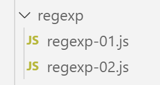

7. Expressions régulières

7.1. script [regex-01]
Dans le cours PHP, nous avions utilisé le code suivant pour illustrer les expressions régulières de PHP 7 :
Nous transposons ce code en Javascript de la façon suivante :
Commentaires
- les codes PHP et Javascript sont très proches l’un de l’autre ;
- ligne 7 : on notera qu’en Javascript l’expression régulière n’est pas une chaîne de caractères mais un objet. On ne met pas de guillemets ou d’apostrophes autour de l’expression ;
- lignes 41 et 44 : il y a deux méthodes pour obtenir le même résultat ; Exécution
1 2 3 4 5 6 7 8 9 10 11 12 13 14 15 16 17 18 19 20 21 22 23 24 25 26 27 28 29 30 31 32 33 34 35 36 37 38 39 40 41 42 43 44 45 46 47 48 49 50 51 52 53 54 55 56 57 58 59 60 61 62 63 64 65 66 67 68 69 70 71 72 73 74 75 76 77 78 79 80 81 82 83 84 85 86 87 88 89 90 91 92 93 94 95 96 97 98 99 100 101 102 103 104 105 106 107 108 109 110 111 112 113 | |
Les méthodes [regexp.exec] et [string.match] donnent les mêmes résultats :
- [null] s’il n’y a pas de correspondances entre la chaîne et son modèle ;
- un tableau t, s’il y a correspondance avec :
- t[0] : la chaîne correspondant au modèle ;
- t[1] : la chaîne correspondant à la 1ère parenthèse du modèle ;
- t[2] : la chaîne correspondant à la 2ième parenthèse du modèle ;
- …
- t[input] : la chaîne entière dans laquelle on a cherché le modèle ;
7.2. script [regexp-02]
Parfois on ne souhaite pas récupérer des éléments de la chaîne testée mais seulement savoir si elle correspond au modèle :
Commentaires
- [regexp-02] reprend le code de [regexp-01] avec les différences suivantes :
- on ne souhaite pas récupérer des éléments de la chaîne testée. Aussi a-t-on enlevé les parenthèses dans les expression régulières utilisées ;
- ligne 40 : on utilise la méthode [Regexp.test] pour savoir si une chaîne de caractères vérifie une expression régulière ; Les résultats de l’exécution sont les suivants :